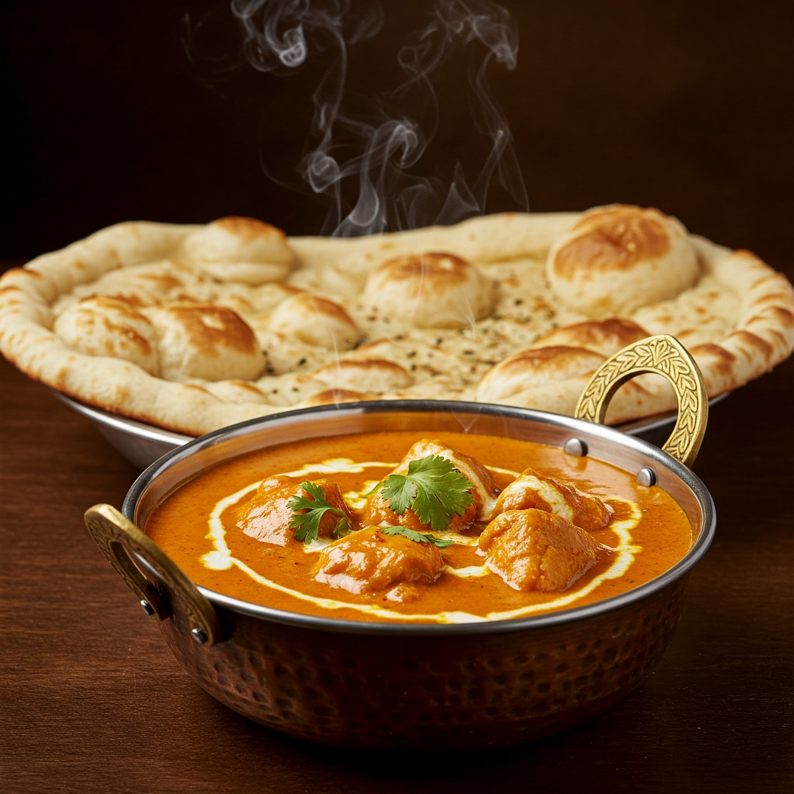

Butter Chicken with Naan
Ingredients
- 500g boneless chicken (preferably thigh pieces)
- 1/2 cup curd (for marination)
- 1 tbsp ginger-garlic paste
- 1 tsp red chilli powder
- 1/2 tsp turmeric
- 1 tsp garam masala
- Salt to taste
- 2 tbsp butter
- 1 onion (finely chopped)
- 2 tomatoes (pureed)
- 1/2 tsp sugar
- 1/2 cup cream
- Kasuri methi (dried fenugreek leaves)
- Fresh coriander for garnish
Steps
- Marinate chicken with curd, ginger-garlic paste, turmeric, chilli powder, garam masala, and salt. Let it sit for 1 hour.
- Cook or grill the marinated chicken pieces until tender. Set aside.
- In a pan, melt butter. Sauté chopped onions until golden.
- Add tomato puree and cook until oil separates. Add sugar and salt as needed.
- Mix in cream and kasuri methi. Simmer the gravy for a few minutes.
- Add the cooked chicken pieces and simmer for 5–7 minutes to absorb flavors.
- Garnish with coriander and serve hot with naan.